Giyu Tomioka
História
Já muito novo, Giyu perdeu sua irma mais velha Tsutako Tomioka para um oni após a garota ter o escondido
e sacrificado sua vida. E mesmo que o jovem tenha contado para outras pessoas a forma que sua irma foi
assassinada, foi taxado de louco. Devido a isso, teve de se mudar para que se encontrasse com um médico,
mas que também era seu parente. Todavia, antes disso ocorrer, Tomioka por pouco não faleceu a caminho, e
precisou ser regatado por Sakonji Urodaki, que logo seria seu futuro mestre.
Com Urodaki treinando o garoto de apenas 13 anos, Giyu pode conhecer Sabito, que também estava recebendo
ensinamentos. Nisso, nasceu uma amizade bem forte entre os dois já que tinham aspectos em comum, mesmo
que não tenha durado tanto tempo. Já que, após os treinamentos necessários, os dois garotos, em busca de
se tornarem caçadores de demônios, deram entrada a Seleção Final. E é de entristecer o resultado,
pensando que, após Tomioka desmaiar em uma luta contra um demônio, Sabito tomou a dianteira e salvou a
todos que o demônio bajulavam, contudo, após Giyu se recuperar de sua contusão recebeu a notícia de que
somente a vida de Sabito havia sido perdida naquele teste. E isso gerou consequências futuras para a
personalidade do Pilar, já foi instaurada uma forte insegurança em si sobre a validez de seu posto como
hashira.
Com o tempo, Giyu pode conhecer os irmãos Kamado. No qual, inicialmente, ele não hesitou em matar a
garota oni. Assim foi cravada uma complexa batalha. E, quando Tomioka conseguiu apanhar Nezuko, já
estava enfurecido pelos pedidos de misericórdia de Tanjirou, então o Pilar afirmava que achar uma cura
era impossível além de relembrar a fraqueza em não proteger sua família, apunhalando assim a garota oni,
dispertando a fúria do garoto mais jovem. Mas também se surpreendeu ao quase ser atingido por um machado
lançado estrategicamente em sua direção. Como também ao notar qur a garota visava proteger seu irmão,
lembrando de uma afirmação de Tanjirou onde jurava que sua irmã não havia matado nenhum humano, sendo
assim, hesitou após um momento de reflexão, esquecendo seu desejo de matar Nezuko. Então, com os irmãos
inconscientes, ele tomou a decisão de ajudá-los, ajustando um pedaço de bambu e o amarrando na boca da
oni, e os instruindo para ir de encontro com seu antigo mestre, além de outras instruções. Sendo que ao
entardecer, mandou uma carta para Urodaki o avisando de suas futuras visitas.
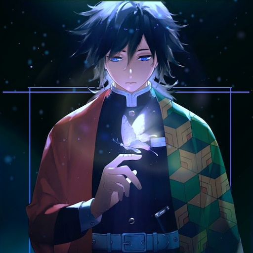
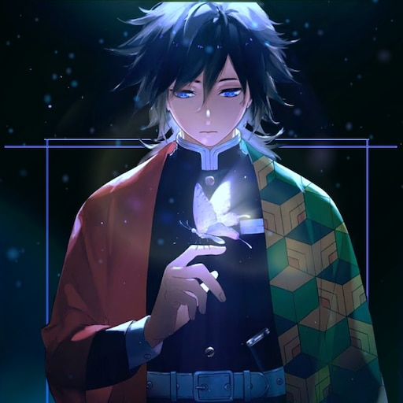
habilidades
Como é de conhecimento, Giyu é um personagem de grandes habilidades e técnicas e não é por pouco que ele
recebeu o posto como um Pilar. Sua força é extrema, com o passar do anime isso pode ser notado, além de
sua rapidez notável até mesmo no começo do anime. Ele é um exímio espadachim no campo de batalha sendo
um dos melhores na organização e sabe usufruir seu próprio poder de maneira necessária, possui cautela,
inteligência e raciocínio acelerado com a concentração o suficiente para analisar as situações em suas
lutas. Além de ter reflexos bem formidáveis e agilidade estupenda para movimentar sua katana.
Conseguindo muitas vezes acabar com a vida de seus oponentes sem muita dificuldade. Em suas batalhas,
cria certas vantagens ao conseguir atacar e defender em momentos próximos nos quais os inimigos não tem
a mínima chance. Pode-se notar sua rapidez e força em sua chegada a luta de Tanjirou contra o oni Rui,
que sem estribeiras arrancou a cabeça de uma Lua Inferior 5, e também prendendo Inosuke que nem se deu
conta devido a rapidez do Pilar. Sua resistência também é de se admirar, ao fato de ter aguentado aos
fortes ataques de uma Lua Superior e continuar lutando sem demonstrar fraqueza perantes as contusões.
Além de ter mantido a batalha contra Muzan até o fim ao lado de alguns companheiros hashiras, pensando
que outros já haviam caído há algum tempo. Nessa mesma batalha, foi possível perceber sua habilidade
crescer, ao notar que sua espada mudou por um tempo para a cor avermelhada, tom que se consede a
desaceleração da regeneração dos onis.

Respiração das Chamas
A Respiração da Água [水の呼吸; Mizu no Kokyū] é uma forma do humano ter a capacidade de aumentar suas
habilidades como resistência, força e rapidez, para ter a chance de rivalizar com os demônios. Nessa
técnica, é possível
controlar seu oxigênio de forma que grande parte vagueie pelo sangue de todo corpo. Também existem
outras respirações, como a das chamas [炎の呼吸, Honō no kokyū ], dominada pelo Hashira Rengoku Kyojurou.
Além de ser uma respiração, dentre muitas, derivadas da Respiração do Sol. E esse estilo foi ensinado a
Giyu pelo mestre Sakonji Urodaki, esse que também mostrou seus ensinamentos a Tanjirou. No qual, para
Tomioka, lhe foi apresentado 10 estilos, mas como citado, o jovem Pilar teve a capacidade de criar o
Décimo Primeiro Estilo. Conheça agoras as outras formas:
Primeira Forma: Corte d’ Água Superficial – Ichi no kata: Minamo giri
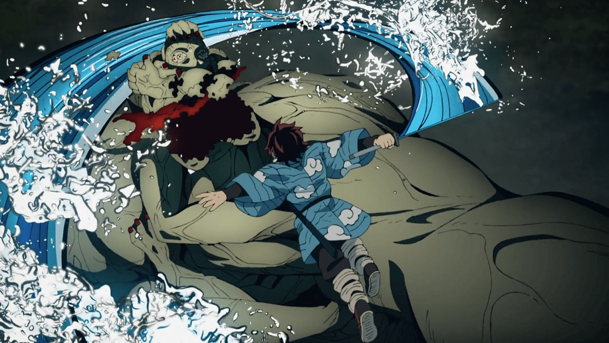
Embora não tenha sido a primeira técnica que vimos Tanjiro utilizar na obra, a Primeira Forma da Respiração da Água é um movimento relativamente simples, em que o espadachim impulsiona sua espada para frente realizando um poderoso corte lateral.
Segundo Forma: Roda d’ Água – Ni no kata: Mizu guruma
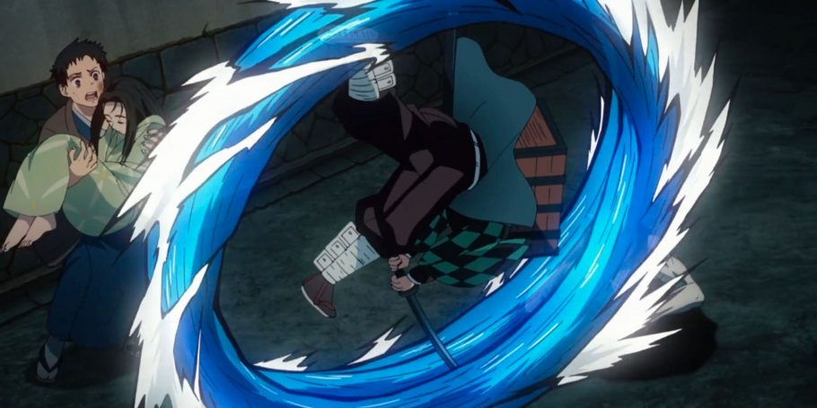
Ainda durante o teste para a entrada na Corporação dos Caçadores de Demônios, Tanjiro utilizou a Segunda Forma da Respiração da Água, em que ele salta e gira verticalmente no ar com a sua espada liberando um ataque em movimento circular.
Terceira Forma: Dança dos Movimentos Rápidos Padronizados – San no kata: Ryūryū mai
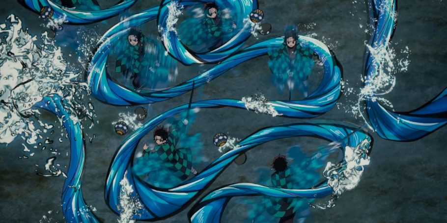
Para lidar com a combinação dos ataques dos demônios Yahaba e Susamaru, Tanjiro utilizou a Terceira Forma, onde ele se move rapidamente balançando a sua espada de maneira a imitar o movimento das ondas do oceano.
Quarta Forma: Maré Impactante – Shi no kata: Uchishio
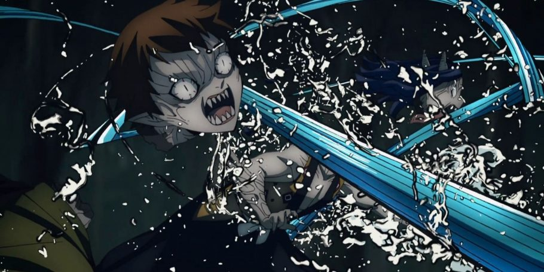
Sendo a primeira forma que vimos Tanjiro utilizar no mangá, a Quarta Forma da Respiração da Água consiste em uma sequência de golpes consecutivos movendo o corpo de forma fluida semelhante a uma maré..
Quinta Forma: Chuva Milagrosa em Dia Seco – Go no kata: Kanten no jiu
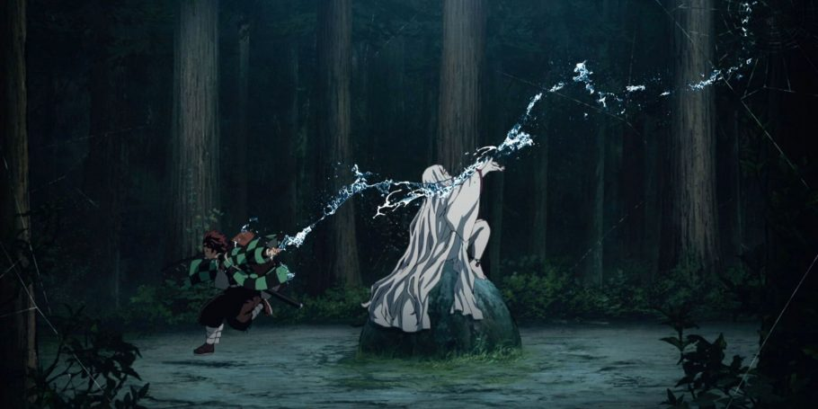
Sendo utilizado como golpe final no demônio aranha que representava a “mãe” de Rui, a Quinta Forma é um golpe rápido e sutil que tem como objetivo matar o alvo com pouca ou nenhuma dor.
Sexta Forma: Redemoinho Giratório – Roku no kata: Nejire uzu
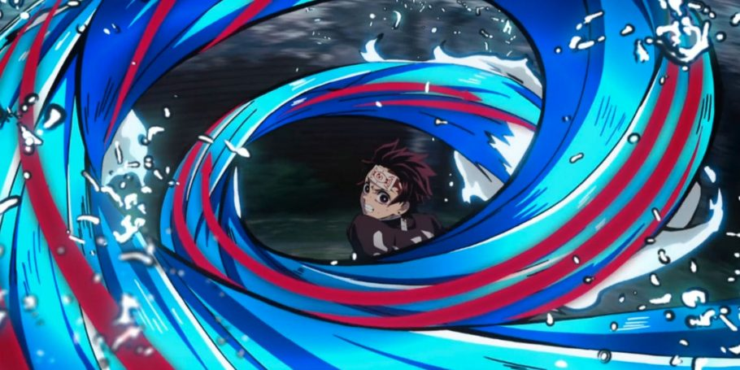
Como o próprio nome sugere, para realizar a Sexta Forma o espadachim precisa contorcer rapidamente a parte inferior e superior do seu corpo com o objetivo de criar um redemoinho que corta tudo que está próximo.
Sétima Forma: Ataque Curvo Perfurador de Ondas – Shichi no kata: Shizuku wa Mondzuki
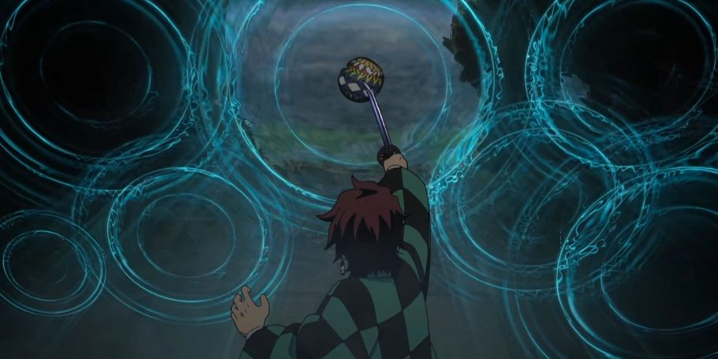
Voltando para a luta Yahaba e Susamaru, a Sétima Forma é um ataque rápido e preciso realizando através de um estocada com a espada. Essa também a mais rápida Forma da Respiração da Água.
Oitava Forma: Jarro de Cachoeira – Hachi no kata: Takitsubo
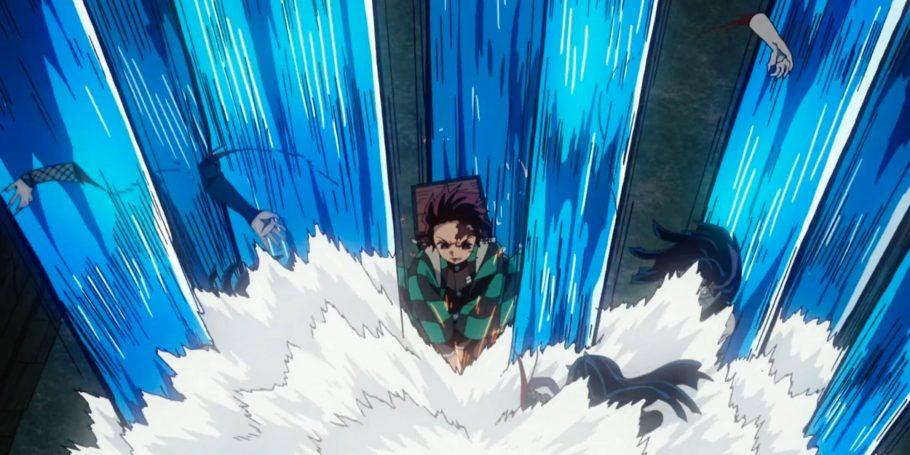
Tendo a potência de uma cachoeira, a Oitava Forma seria o equivalente a Primeira Forma, só que realizada com um potente corte vertical em um único golpe.
Nova Forma: Respingo de Água do Caos – Ku no kata: Suiryū shibuki
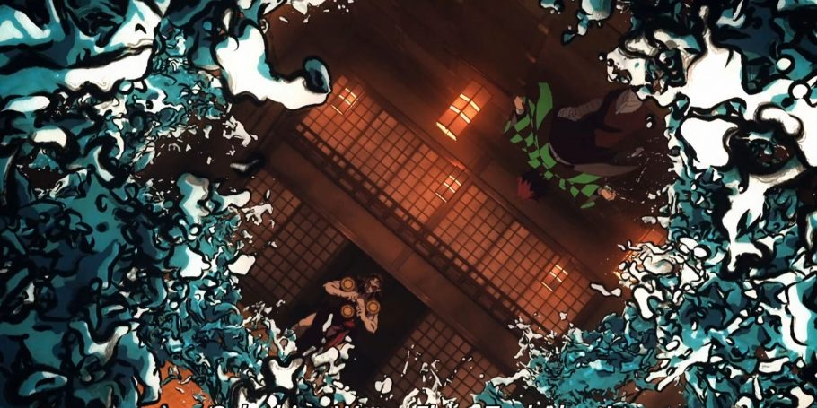
Simulando a ideia de que o espadachim está pisando brevemente na superfície da água, a Nova Forma é composta por movimentos rápidos e praticamente sem limites, em que o usuário luta sem a necessidade de fixar os pés em uma superfície.
Décima Forma: Dragão da Mudança (ou Fluxo Constante) – Jū no kata: Seisei ruten
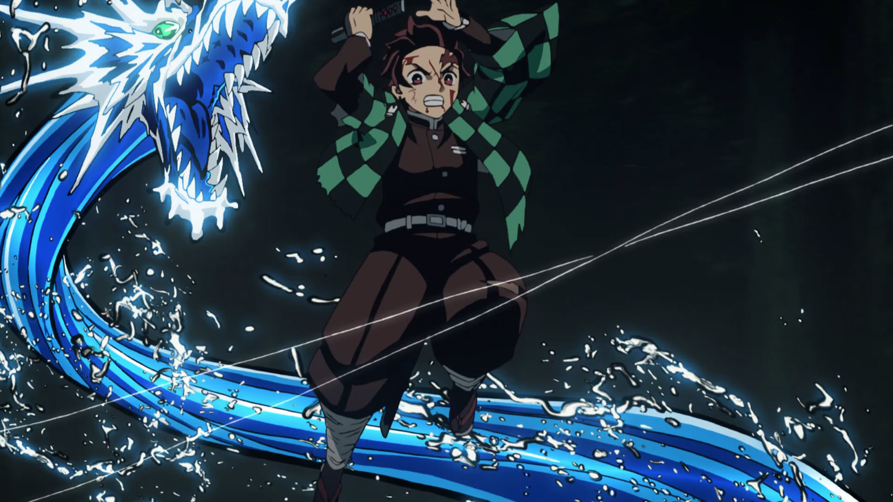
A última forma utilizada por Tanjiro, a Décima Forma é uma sequência de ataques contínuos que vão ficando cada vez mais fortes à medida que os cortes vão sendo realizados.
Décima Primeira Forma: Calmaria – Jū Ichi no kata: Nagi
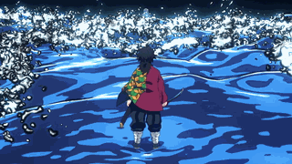
Por fim, a Décima Primeira Forma foi criada exclusivamente por Giyu Tomioka, o atual Pilar da Água. Interrompendo todos os movimentos do seu corpo, o espadachim entra em estado de defesa completa desviando e bloqueando qualquer ataque.